codly.new
Creates a formatted code block. codly.new is an alias of codly.codly; codly.set_, codly.show_, and codly.selector target the same element.
Signature
codly.new(body, ..fields)body is positional and required. It accepts source text, a path, or content containing raw blocks. Other fields are named. The setters accept named field values; show_ installs a scoped replacement callback, and selector creates a Typst selector for block instances.
Fields
| Field | Type | Default / required | Meaning |
|---|---|---|---|
body |
none | str | path | content |
Required | Raw source text, a caller-resolved file path, or content. |
file |
auto | none | str | path | content |
auto |
Filename badge; auto uses the input path basename and none hides it. |
lang |
auto | none | str |
auto |
Language for source or path input; auto infers from the file extension. |
lang-position |
auto | none | alignment |
auto |
Language badge placement. Top/bottom place it in header/footer; left/right alone reserves space by the first code row. |
file-position |
none | alignment |
top + left |
Filename badge placement; none hides it. |
block-label |
auto | none | label |
auto |
auto uses the nearest enclosing figure's label; an unlabeled inner figure stops discovery. none disables block references; a label sets the target explicitly. |
alias |
none | str |
none |
Marks a block as already aliased. |
number-enabled |
none | bool |
true |
Whether the automatic line-number column is shown. |
diff |
auto | none | bool | diff |
auto |
Diff processing; false or none disables it, while true or a diff configuration enables it. |
gutters |
auto | array<auto | gutter-column> |
auto |
Ordered columns before code. auto keeps the ordinary number column; an empty array hides all gutters. |
offset |
int | label | auto |
0 |
Added to source line numbers; a label continues numbering and auto renumbers the first selected line to 1. |
range |
none | range |
none |
Source-line range to display. |
ranges |
none | array<range> |
none |
Multiple source-line ranges to display. |
smart-skip |
none | bool | smart-skip |
false |
Controls collapsed skipped lines. |
aliases |
none | dictionary |
(:) |
Language aliases. |
smart-indent |
none | bool |
true |
Enables indentation-aware wrapping. |
wrap-marker |
none | content |
none |
Symbol shown on wrapped continuation lines when smart indentation is enabled. |
skip-last-empty |
none | bool |
true |
Whether to omit a final empty source line. |
breakable |
none | bool |
true |
Whether the block can break across pages. |
skips |
none | array<skip> |
none |
Explicit skipped-line configuration. |
skip-line |
none | content | array<none | content> |
align(center)[ ... ] |
Content used for skipped source lines. |
skip-number |
none | content | array<none | content> |
[ ... ] |
Content used for skipped line numbers. |
unnumbered |
none | array<unnumbered-line> |
() |
Source lines to display without a line number. |
annotations |
none | array<annotation-config> |
none |
Annotations beside source-line ranges. |
callouts |
none | array<callout-config> |
none |
Callouts attached to source positions. |
highlighted |
none | array<highlighted-line> |
() |
Whole-line highlights. |
highlights |
none | array<highlight-config> |
none |
Highlight regions and palettes. |
header |
none | content |
none |
Content above the code. |
footer |
none | content |
none |
Content below the code. |
radius |
none | length |
0.32em |
Corner radius of the block. |
padding |
length | dictionary |
0pt |
Extra inner edge space, separate from row inset and leading. A dictionary may use top, right, bottom, left, x, y, and rest. |
leading |
none | length |
none |
Vertical space between rows. |
gutter |
none | length |
none |
General spacing between grid rows and columns. |
column-gutter |
none | length |
none |
Horizontal spacing between block columns. |
row-gutter |
none | length |
none |
Vertical spacing between block rows. |
sublangs |
none | array<sublang> |
none |
Languages applied to inclusive source-line ranges. |
rainbow |
none | bool | rainbow |
none |
Opt-in syntax-aware delimiter colors. |
indent-guides |
none | bool | indent-guides |
none |
Opt-in indentation guides. |
width |
length | ratio | auto |
100% |
Block width; auto fits natural width up to the available width. |
Behavior
Fields are validated and cast by their declared types. Gutter arrays and functions cast to gutter-column; gutters: auto includes the ordinary number column when enabled, and custom columns remain when number-enabled is false. Custom gutters replace diff’s automatic old/new/marker columns. Diff colors may be paints, none, auto (the ordinary row fill), or callbacks receiving a row with diff information. Explicit highlights take precedence over diff backgrounds.
Ranges select source lines before display. Diff references count displayed patch rows; highlight and callout character positions count code characters without diff markers. Diff context uses new-side syntax, and each hunk or file is highlighted independently.
#show: codly.set_(..fields) sets named field defaults in scope. #show: codly.show_(it => content) replaces matching blocks with the callback result; return it inside the result to retain the block. #show codly.selector(): it => content uses a native Typst selector. selector accepts outline, outer, and meta boolean options, all defaulting to false; these select Elembic representation layers rather than filtering fields.
Example
#import "@preview/codly:2.0.0" as codly
#set raw(lang: example-language)
#codly.new(
```
def greet(name):
print(f'Hello, {name}!')
```,
file: "greeting.py",
offset: 10,
)Edit & run on your device
The controls supply the example variables. Their definitions are hidden here; Copy code includes the current values and your edits.

Example: Automatic Code Blocks
#import "@preview/codly:2.0.0" as codly
#show raw.where(block: true): codly.new
```py
def greet(name):
print(f'Hello, {name}!')
```Edit & run on your device
The highlighted source and output update after you stop typing. Copy code includes your edits.
